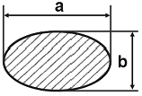
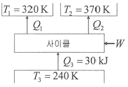
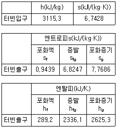
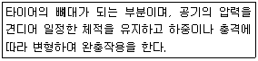
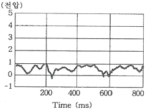
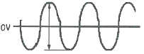
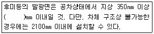
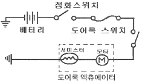

자동차정비기사 (2017-03-05 기출문제)
1과목: 일반기계공학
1. 구름 베어링과 비교할 때, 미끄럼베어링의 특징으로 옳은 것은?
- 호환성이 높은 편이다.
- 구름마찰이며, 기동 마찰이 작다.
- 비교적 큰 하중을 받으며 충격 흡수 능력이 크다.
- 표준형 양산품으로 제작하기보다는 자체 제작 하는 경우가 많다.
(정답률: 58%)

2. 다음 그림과 같은 타원형 단면을 갖는 봉이 인장하중(P)을 받을 때, 작용하는 인장응력은 얼마인가?

- πab2/4P
- 4P/πab2
- πab/4P
- 4P/πab
(정답률: 47%)
3. 리벳 구멍이 압축하중(P)에 의해 파괴될 때, 압축응력 계산식은? (단, σc는 압축응력, t는 판 두께, d는 리벳지름)
- σc = P/dt
- σc = dt/P
- σc = P/2dt
- σc = 2P/dt
(정답률: 50%)
4. 센터리스 연삭기의 조정숫돌에 의하여 가공물이 회전과 이송을 할 때, 가공물의 이송속도 (㎜/min)는? (단, d는 조정숫돌의 지름(㎜), n은 조정 숫돌의 회전수(rpm), α는 경사각이다.)
- (πdn/1000)·sin∝
- πdn·sin∝
- πdn·tan∝
- (πdn/1000)·tan∝
(정답률: 52%)
5. 재료의 최대응력과 항복응력 및 허용응력을 적용하여 안전율을 나타내는 식은?
- 허용응력/항복응력
- 항복응력/허용응력
- 최대응력/항복응력
- 항복응력/최대응력
(정답률: 55%)
6. 피복 아크 용접결함의 종류에서 용입불량의 원인으로 가장 거리가 먼 것은?
- 이음 설계의 불량
- 용접봉의 선택 불량
- 전류가 너무 높을 때
- 용접 속도가 너무 빠를 때
(정답률: 37%)
7. 코일 스프링에서 스프링상수(k)에 대한 설명으로 틀린 것은?
- 스프링 소재지름의 4승에 비례한다.
- 스프링의 변형량에 비례한다.
- 코일 평균 지름의 3승에 반비례한다.
- 스프링 소재의 전단탄성계수에 비례한다.
(정답률: 42%)
8. 오스테나이트계 스테인리스강의 일반적인 특징으로 틀린 것은?
- 자성체이다.
- 내식성이 우수하다.
- 내충격성이 우수하다.
- 염산, 황산 등에 약하다.
(정답률: 62%)
9. 유압펌프의 실제 토출압력이 500kgf/cm2, 실제 펌프 토출량이 200cm3/s, 펌프의 전효율이 0.9일 때 펌프축을 구동하는 데 필요한 동력은 약 몇 kW인가?
- 10.9
- 14.8
- 21.8
- 29.6
(정답률: 31%)
10. 원형 단명봉에 비틀림 모멘트(T)가 작용할 때생기는 비틀림각(θ)에 대한 설명으로 옳은 것은?
- 축 길이에 반비례한다.
- 전단탄성계수에 비례한다.
- 비틀림 모멘트에 반비례한다.
- 축 지름의 4제곱의 반비례한다.
(정답률: 59%)
11. 비틀림각이 30°인 헬리컬 기어에서 잇수가 50개, 이직각 모듈이 3일 때 바깥지름은 약 몇 ㎜인가?
- 184.21
- 179.21
- 208.21
- 264.21
(정답률: 53%)
12. 다음 중 순도가 가장 높으나 취약하여 가공이 곤란한 동의 종류는?
- 전기동
- 정련동
- 탈산동
- 무산소동
(정답률: 63%)
13. 유압 작동유의 점도가 높을 때 나타나는 현상으로 틀린 것은?
- 동력 손실의 증대
- 내부 마찰의 증대와 온도 상승
- 펌프 효율 저하에 따른 온도 상승
- 장치의 파이프 저항에 의한 압력 증대
(정답률: 44%)
14. 펌프에서 발생하는 캐비테이션(cavitation) 현상의 방지법이 아닌 것은?
- 양쪽 흡입 펌프를 사용한다.
- 2개 이상의 펌프를 사용한다.
- 펌프의 회전수를 최대한 높인다.
- 펌프의 설치 높이를 낮추어 흡입행정을 짧게 한다.
(정답률: 64%)
15. 다음 중 프레스 가공에서 전단가공이 아닌 것은?
- 블랭킹(blacking))
- 펀칭(punching)
- 트리밍(trimming)
- 스웨이징(swaging)
(정답률: 64%)
16. 나사면의 마찰계수 μ와 마찰각 p의 관계식은?
- μ = sinp
- μ = cosp
- μ = tanp
- μ = cotp
(정답률: 61%)
17. 주물에서 중공부분이 필요할 때 사용하는 목형으로 가장 적합한 것은?
- 현형
- 회전형
- 코어형
- 부분형
(정답률: 62%)
18. 게이지 블록이나 마이크로미터 측정면의 평면도를 측정하는 데 가장 적합한 측정기는?
- 공구 현미경
- 옵티컬 플랫
- 사인바
- 정반
(정답률: 63%)
19. 강재 표면에 Zn을 침투·확산시키는 세라다이징법에 의해 개선되는 성질은?
- 전연성
- 내열성
- 내식성
- 내충격성
(정답률: 64%)
20. 단순보의 정중앙에 집중하중이 작용할 때, 이보의 최대 처짐량에 대한 설명으로 틀린 것은?
- 지지점 사이의 거리의 3제곱에 반비례한다.
- 단면 2차 모멘트에 반비례한다.
- 세로탄성계수에 반비례한다.
- 집중하중 크기에 비례한다.
(정답률: 58%)
2과목: 기계열역학
21. 10℃에서 160℃까지 공기의 평균 정적비열은 0.7315kJ/(kg·K)이다. 이 온도 변화에서 공기 1kg의 내부에너지 변화는 약 몇 kJ인가?
- 101.1kJ
- 109.7kJ
- 120.6kJ
- 131.7kJ
(정답률: 58%)
22. 다음 냉동 사이클에서 열역학 제 1법칙과 제 2법칙을 모두 만족하는 Q1, Q2, W는?

- Q1= 20kJ, Q2= 20kJ, W=20kJ
- Q1= 20kJ, Q2= 30kJ, W=20kJ
- Q1= 20kJ, Q2= 20kJ, W=10kJ
- Q1= 20kJ, Q2= 15kJ, W=5kJ
(정답률: 60%)
23. 열역학 제1법칙에 관한 설명으로 거리가 먼 것은?
- 열역학적계에 대한 에너지 보존법칙을 나타낸 다.
- 외부에 어떠한 영향을 남기지 않고 계가 열원으로부터 받은 열을 모두 일로 바꾸는 것은 불가능하다.
- 열은 에너지의 한 형태로서 일을 열로 변환 하거나 열을 일로 변환하는 것이 가능하다.
- 열을 일로 변환하거나 일을 열로 변환할 때, 에너지의 총량은 변하지 않고 일정하다.
(정답률: 44%)
24. Rankine 사이클에 대한 설명으로 틀린 것은?
- 응축기에서의 열 방출 온도가 낮을수록 열효율 좋다.
- 증기의 최고온도는 터빈 재료의 내열특성에 의하여 제한된다.
- 팽창일에 비하여 압축일이 적은 편이다.
- 터빈 출구에서 건도가 낮을수록 효율이 좋아 진다.
(정답률: 53%)
25. 온도 300K, 압력 100kPa 상태의 공기 0.2kg이 완전히 단열된 강체 용기 안에 있다. 패들(paddle)에 의하여 외부로부터 공기에 5kJ의 일이 행해질 때 최종 온도는 약 몇 K인가? (단, 공기의 정압비열과 정적비열은 각각 1.0035kJ/(kg·K), 0.7165kJ/(kg·K)이다.)
- 315
- 275
- 335
- 255
(정답률: 27%)
26. 단열된 가스터빈의 입구측에서 가스가 압력 2MPa, 온도 1200K로 유입되어 출구측에서 압력 100kPa, 온도 600K로 유출된다. 5MW의 출력을 얻기 위한 가스의 질량유량은 약 몇 kg/s인가? (단, 터빈의 효율은 100%이고, 가스의 정압 비율은 1.12kJ/(kg·k)이다.)
- 6.44
- 7.44
- 8.44
- 9.44
(정답률: 35%)
27. 물 1kg이 포화온도 120℃에서 증발할 때, 증발 잠열은 2203kJ이다. 증발하는 동안 물의 엔트로피 증가량은 약 몇 kJ/K인가?
- 4.3
- 5.6
- 6.5
- 7.4
(정답률: 49%)
28. 14.33W의 전등을 매일 7시간 사용하는 집이 있다. 1개월(30일) 동안 약 몇 kJ의 에너지를 사용하는가?
- 10830
- 15020
- 17420
- 22840
(정답률: 63%)
29. 피스톤-실린더 시스템에 100kPa의 압력을 갖는 1kg의 공기가 들어있다. 초기 체적은 0.5이고, 이 시스템에 온도가 일정한 상태에서 열을 가하여 부피가 1.0m3이 되었다. 이 과정 중 전달된 에너지는 약 몇 kJ인가?
- 30.7
- 34.7
- 44.8
- 50.0
(정답률: 28%)
30. 증기 터빈의 입구 조건은 3MPa, 350℃이고 출구의 압력은 30kPa이다. 이 때 정상 등엔트로피 과정으로 가정할 경우, 유체의 단위 질량당 터빈에서 발생되는 출력은 약 몇 kJ/kg인가? (단, 표에서 h는 단위질량당 엔탈피, s는 단위질량당 엔트로피이다.)

- 679.2
- 490.3
- 841.1
- 970.4
(정답률: 23%)
31. 다음 압력값 중에서 표준대기압(1atm)과 차이가 가장 큰 압력은?
- 1MPa
- 100kPa
- 1bar
- 100hPa
(정답률: 65%)
32. 오토 사이클로 작동되는 기관에서 실린더의 간극 체적이 행정 체적의 15%라고 하면, 이론 열효율은 약 얼마인가? (단, 비열비 k=1.4이다)
- 45.2%
- 50.6%
- 55.7%
- 61.4%
(정답률: 32%)
33. 1kg의 공기가 100℃를 유지하면서 등온팽창하여 외부에 100kJ의 일을 하였다. 이때 엔트로피의 변화량은 약 몇 kJ/(kg·K)인가?
- 0.268
- 0.373
- 1.00
- 1.54
(정답률: 34%)
34. 압력5kPa, 체적이 0.3m3인 기체가 일정한 압력하에서 압축되어 0.2m3로 되었을 때, 이 기체가 한 일은? (단,＋는 외부로 기체가 일은 한 경우이고, -는 기체가 외부로부터 일을 받은 경우이다.)
- -1000J
- 1000J
- -500J
- 500J
(정답률: 48%)
35. 분자량이 M이고 질량이 2V인 이상기체 A가 압력 p, 온도 T(절대온도)일 때 부피가 V이다. 동일한 질량의 다른 이상기체 B가 압력 2p, 온도 2T(절대온도)일 때 부피가 2V이면이 기체의 분자량은 얼마인가?
- 0.5M
- M
- 2M
- 4M
(정답률: 41%)
36. 폴리트로픽 과정 pv=C에서 지수 n=∞인 경우는 어떤 과정인가?
- 등온과정
- 정적과정
- 정압과정
- 단열과정
(정답률: 51%)
37. 300L 체적의 진공인 탱크가 25℃, 6MPa의 공기를 공급하는 관에 연결된다. 밸브를 열어 탱크 안의 공기 압력이 5MPa이 될 때까지 공기를 채우고 밸브를 닫았다. 이 과정이 단열이고 운동에너지와 위치에너지의 변화는 무시해도 좋을 경우에 탱크 안의 공기의 온도는 약 몇 ℃가 되는가? (단, 공기의 비열비는 1.4이다.)
- 1.5℃
- 25.0℃
- 84.4℃
- 144.3℃
(정답률: 17%)
38. 4kg의 공기가 들어 있는 체적 0.4m3의 용기(A)와 체적이 0.2m3인 진공의 용기(B)를 밸브로 연결하였다. 두 용기의 온도가 같을 때, 밸브를 열어 용기 A와 B의 압력이 평형에 도달했을 경우, 이 계의 엔트로피 증가량은 약 몇 J/K인가? (단, 공기의 기체상수는 0.287kJ/(kg·K)이다.)
- 712.8
- 595.7
- 465.5
- 348.2
(정답률: 22%)
39. 다음에 열거한 시스템의 상태량 중 종량적 상태량인 것은?
- 엔탈피
- 온도
- 압력
- 비체적
(정답률: 58%)
40. 이상적인 증기-압축 냉동사이클에서 엔트로피가 감소하는 과정은?
- 증발과정
- 압축과정
- 팽창과정
- 응축과정
(정답률: 43%)
3과목: 자동차기관
41. 저위발열량 1⑤00kcal/kg, 비중 0.78인 디젤 연료를 24시간 동안 240L를 소비했다면 연료 마력은 약 몇 PS인가?
- 86
- 125
- 130
- 180
(정답률: 26%)
42. LPI(liquid petroleum injection)기관의 구성부품으로 틀린 것은?
- 연료펌프
- 인젝터
- 믹서
- 연료압력조절기
(정답률: 78%)
43. 밸브 오버랩을 설명한 것 중 옳은 것은?
- 배기행정 초기에 배기밸브가 열려 피스톤이 하향하여 가스가 새는 현상
- 압축행정 시 밸브와 밸브 시트 사이에서 가스가 새는 현상
- 배기행정 말에 흡기밸브와 배기밸브가 동시에 열려 있는 상태
- 흡입행정 말에 흡기밸브와 배기밸브가 동시에 닫혀 있는 상태
(정답률: 78%)
44. 디젤 산화촉매기(DOC)의 기능으로 틀린 것은?(오류 신고가 접수된 문제입니다. 반드시 정답과 해설을 확인하시기 바랍니다.)
- PM의 저감
- CO, HC의 저감
- NO를 NH3로 변환
- 촉매 가열기(burner) 기능
(정답률: 53%)
45. 정압 사이클 과정 중 상태 변화에 대한 설명으로 틀린 것은?
- 등엔트로피 압축
- 등엔트로피 팽창
- 정압하에서 열 공급
- 정압하에서 열 방출
(정답률: 52%)
46. 전자제어 연료분사장치의 인젝터에서 연료 분사량을 결정하는 요인이 아닌 것은?
- 노즐의 지름
- 연료의 압력
- 인젝터의 재질
- 니들밸브가 열려 있는 시간
(정답률: 74%)
47. 연소실의 구비 조건으로 틀린 것은?
- 화염전파 거리가 짧을 것
- 노크방지를 위해 와류가 없어야 할 것
- 가열되기 쉬운 돌출부를 두지 않을 것
- 열효율 증대를 위해 실린더로 전도되는 열량을 적게 할 것
(정답률: 65%)
48. 피스톤 링의 역할로 틀린 것은?
- 피스톤의 직선운동을 회전운동으로 변환시킨다.
- 실린더 벽면에 윤활유를 긁어내린다.
- 피스톤과 실린더 사이를 밀봉시킨다.
- 피스톤의 열을 실린더 벽에 전달한다.
(정답률: 79%)
49. 가솔린직접분사(GDI)방식의 구성부품으로 틀린 것은?
- 고압 펌프
- 예열플러그
- 저압펌프
- 연료압력조절기
(정답률: 83%)
50. 전자제어 가솔린기관의 ECU에서 점화시기 제어와 직접적인 관련이 있는 센서가 아닌 것은?
- 노크 센서
- 산소 센서
- 냉각수온도 센서
- 스트롤 포지션 센서
(정답률: 56%)
51. 흡기장치에 대한 설명으로 틀린 것은?
- 저속에서는 혼합기의 무화가 악화된다.
- 고속성능용 흡기장치는 흡기통로가 짧아야 한다.
- 전회전 영역에 걸쳐 흡입효율이 양호해야 한다.
- 흡기저항을 크게 하기 위해 흡기통로를 통합시킨다.
(정답률: 65%)
52. 캐니스터에 저장되어 있던 연료증발 가스를 서지탱크로 유입시키는 장치는?
- PCV(positive crankcase ventilation valve)
- EGR(exhaust gas recirculation valva)
- PCSV(purge control solenoid valva)
- 리드밸브(reed valve)
(정답률: 74%)
53. 기관의 연소실 체적( )이 0.1리터일 때의 압력(Pc)이 30bar이다. 연소실 체적(Vc)이 1.1리터로 커지면 압력은 약 몇 bar인가? (단, 동작유체는 이상기체이며, 등온과정이다.)
- 2.73
- 3.3
- 27.3
- 33
(정답률: 50%)
54. 냉각장치에서 라디에이터의 구비 조건이 아닌 것은?
- 단위 면적당 방열량이 클 것
- 가볍고 작으며, 강도가 클 것
- 냉각수 흐름의 저항이 클 것
- 공기 흐름의 저항이 작을 것
(정답률: 73%)
55. 전자제어 가솔린기관에서 냉각수온센서의 설명으로 옳은 것은?
- 냉각수온센서는 전기저항과 관계가 없다.
- 온도에 따라 저항이 변화하는 서미스터 방식이다.
- 실린더 헤드에 부착되어 냉각 수온을 간접 계측한다.
- 냉각수온센서 신호에 의해 냉각수의 온도가 일정하게 유지된다.
(정답률: 74%)
56. 부특성 서미스터 방식의 냉각수온센서에 대한 설명으로 틀린 것은?
- 냉각수온센서의 주변 온도에 따라 출력 전압이 달라진다.
- 냉각수온센서의 저항값은 온도가 올라갈수록 작아진다.
- 점화스위치 ON시 냉각수온센서 출력값이 ECU에 입력된다.
- 점화스위치 ON 상태에서 냉각수온센서 출력 단자와 접지사이의 전압은 항상 일정해야 한다.
(정답률: 67%)
57. 기관성능에 영향을 미치는 요인이 아닌 것은?
- 축마력
- 흡입 공기량
- 기관 회전수
- 연소실의 형상
(정답률: 59%)
58. 시간당 연료소비량이 50kgf, 연료 1kgf당 저위발열량이 15000kcal인 기관의 열효율은 약 몇 %인가? (단, 이 기관의 출력은 300PS이다.)
- 19.3%
- 22.7%
- 25.3%
- 28.7%
(정답률: 44%)
59. 점화순서가 1-3-4-2이고, 두 개의 점화코일을 사용하는 DLI 시스템 기관에서 2번 실린더에 점화할 때 동시에 점화되는 실린더는?
- 1번 실린더
- 3번 실린더
- 4번 실린더
- 1,3,4번 실린더
(정답률: 74%)
60. 전자제어 디젤기관(CRDI)에서 예비분사( pilot injection)가 중단되는 경우가 아닌 것은?
- 예비분사가 주분사를 너무 앞지른 경우
- 연료 압력이 최솟값 이하인 경우
- 기관이 공회전 속도인 경우
- 분사량이 너무 적은 경우
(정답률: 60%)
4과목: 자동차새시
61. 조향장치에서 드래그 링크에 대한 설명으로 옳은 것은?
- 볼 이음과의 접속부가 헐거우면 조향휠의 유격이 크게 된다.
- 드래그 링크의 결합이 불량하면 캠버가 틀어지게 된다.
- 조향휠에 유격이 생기는 것을 방지하는 작용을 한다.
- 드래그 링크에 굽힘이 있으면 조향휠의 유격이 크다.
(정답률: 66%)
62. 브레이크 작동 시 발생한 고장사항 중 제동 계통과 직접적인 관련이 없는 것은?
- 페달이 딱딱하다.
- 브레이크가 밀린다.
- 페달이 푹 들어간다.
- 엔진 rpm이 떨어진다.
(정답률: 76%)
63. 주행 중 자동차 조향휠이 한쪽으로 쏠리는 원인과 가장 거리가 먼 것은?(오류 신고가 접수된 문제입니다. 반드시 정답과 해설을 확인하시기 바랍니다.)
- 바퀴 얼라인먼트의 조정 불량
- 타이어 공기압력 불균일
- 조향휠 유격 조정 불량
- 쇼크업소버의 작동 불량
(정답률: 49%)
64. 자동차의 주행 최고속도를 높이기 위한 방법이 아닌 것은?
- 변속비를 높일 것
- 주행저항을 감소시킬 것
- 구동력이 저하되지 않도록 할 것
- 타이어의 유효반경을 크게 선정할 것
(정답률: 40%)
65. 주행 중 타이어에 발생하는 스탠딩웨이브 현상을 방지할 수 있는 방법으로 틀린 것은?
- 저속으로 주행한다.
- 타이어 공기압을 높인다.
- 전동 저항을 증가시킨다.
- 강성이 큰 타이어를 사용한다.
(정답률: 66%)
66. 자동변속기 토크컨버터에서 스테이터의 기능으로 옳은 것은?
- 클러치판의 마찰력을 감소시킨다.
- 토크컨버터의 동력을 전달 또는 차단한다.
- 오일의 회전방향을 바꿔 회전력을 증대시킨다.
- 오일의 회전속도를 감속하여 견인력을 증가시킨다.
(정답률: 72%)
67. 독립현가장치에서 선회 시 차체의 기울어짐을 방지하기 위하여 설치한 것은?
- 판스프링
- 토크 튜브
- 스태빌라이저
- 쇼크업소버
(정답률: 83%)
68. 변속기의 제3속 변속비가 1.5이고, 종감속장치의 구동피니언 잇수가 8, 링기어의 잇수가 48일 때 제 3속으로 운행 시 총 감속비는?
- 9 : 1
- 11 : 1
- 18 : 1
- 22 : 1
(정답률: 63%)
69. 전자제어 자동변속기에서 제어모듈(TCU)의 제어항목이 아닌 것은?
- 킥 다운 서보 스위치 제보
- 댐퍼 클러치 제어
- 변속 패턴 제어
- 변속 유압 제어
(정답률: 46%)
70. 자동차에 적용된 드럼식 브레이크의 종류가 아닌 것은?
- 리딩 트레일링 슈 형식
- 대형 피스톤 형식
- 2리딩 슈 형식
- 듀어 서보식
(정답률: 67%)
71. 전자제어 현가장치의 기능이 아닌 것은?(오류 신고가 접수된 문제입니다. 반드시 정답과 해설을 확인하시기 바랍니다.)
- 차고 제어기능
- 자세 제어기능
- 감쇠력 제어기능
- 스프링 상수 제어기능
(정답률: 51%)
72. 추진축의 길이가 1400㎜이고, 내경이 70 ㎜, 외경이 74㎜일 때 추진축의 위험 회전수는 얼마인가?
- 5200rpm
- 6236rpm
- 6750rpm
- 7250rpm
(정답률: 38%)
73. 자동차의 안전기준에서 공기압고무타이어의 표기구조 및 성능기준에 관한 사항으로 틀린 것은?
- 금이 가고 갈라지거나 코드층이 노출될 정도의 손상이 없어야 할 것
- 타이어의 최대 허용속도는 해당 자동차의 최고속도 이상일 것
- 타이어의 최소 및 최대 허용속도가 표기되어 있을 것
- 트레드 깊이가 1.6밀리미터 이상 유지될 것
(정답률: 53%)
74. 병렬로 연결되어 있는 코일 스프링의 스프링 상수가 각각 K1=2.5kgf/㎝, K2=3.5kgf/㎝이고 작용하중이 12kgf일 때의 스프링 변형량은?
- 2㎝
- 3㎝
- 4㎝
- 5㎝
(정답률: 55%)
75. 자동차의 선회 성능 중 코너링 포스에 영향을 주는 요소가 아닌 것은?
- 타이어 수직 하중과 타이어 공기압
- 림의 폭과 타이어 사이즈
- 타이어의 열발산 능력
- 타이어 형식과 구조
(정답률: 67%)
76. 공기식 제동장치의 특징에 대한 설명으로 틀린 것은?
- 베이퍼록 현상이 발생되지 않는다.
- 페달을 밟는 양에 따라 제동력이 증가된다.
- 차량의 중량에 큰 영향을 받지 않고 사용할 수 있다.
- 미세한 공기누설에도 제동력이 크게 저하될 위험이 있다.
(정답률: 73%)
77. 다음은 타이어의 구조 중 어떤 부위에 대한 설명인가?

- 카커스
- 사이드월
- 트레드
- 비드
(정답률: 81%)
78. ABS(anti-lock brake system) 장치의 구성품이 아닌 것은?
- 차고 센서
- ABS 경고등
- 휠스피드 센서
- 유압 모듈레이터
(정답률: 78%)
79. 전동식 조향장치(MDPS) 중 칼럼 어시스트 방식 (C-Type)의 구성품이 아닌 것은?
- 사이드 기어
- 토크센서
- 웜 기어
- 모터
(정답률: 60%)
80. 하이브리드 자동차에 적용된 연비 향상 기술로서 감속 또는 제동 시 모터를 발전기로 활용하여 운동에너지를 전기에너지로 변환 하는 것은?
- 아이들 스탑
- 회생 제동장치
- 고전압 배터리 제어 시스템
- 하이브리드 모터 콘트롤 유닛
(정답률: 75%)
5과목: 자동차전기
81. 기동전동기에서 계자 철심이 하는 역할로 가장 적절한 것은?
- 자속을 잘 통하게 하고 계자코일을 고정 한다
- 관성을 크게 하는 일을 한다.
- 전기를 소비하는 일을 한다.
- 전기자 코일을 전열한다.
(정답률: 68%)
82. 자동차 공조장치에서 AQS(유해가스 차단장치) 센서에 대한 설명으로 틀린 것은?
- 외부 공기 중 인체에 유해한 성분을 검출 하여 에어컨 제어모듈에 전달한다.
- 엔진의 배기다기관 하단부 중앙에 설치되어 있다.
- Nox, SO2, CxHy, CO 성분 등을 검출한다.
- 자동공조장치의 입력센서이다.
(정답률: 66%)
83. 하이브리드 자동차에서 PRA(Power Re lay Assembly) 기능에 대한 설명으로 틀린 것은?
- 승객 보호
- 전장품 보호
- 고전압 회로 과전류 보호
- 고전압 배터리 암전류 차단
(정답률: 71%)
84. 바디컨트롤모듈(BCM)에서 배터리 방전을 방지하기 위한 기능은?
- 백업(back-up) 연료 모드
- 슬립모드 진입 기능
- 데이터 리스트 기능
- 페일세이프 기능
(정답률: 66%)
85. 자동차검사기준에서 2등식 자동차의 전조등 광도는 몇 칸델라 이상이어야 적합한가? (단, 최고속도가 매시 25킬로미터 이하인 자동차는 제외한다.)
- 7500칸델라
- 12000칸델라
- 15000칸델라
- 112500칸델라
(정답률: 70%)
86. 기동전동기의 링기어 잇수가 130, 피니언 잇수가 14이고, 기관의 회전저항이 8kgf·m일 때 기동전동기의 최소 필요 회전력은 약 몇 kgf·m인가?
- 0.66
- 0.76
- 0.86
- 0.96
(정답률: 32%)
87. 다음 그림은 어떤 센서의 파형인가?

- 산소 센서
- 냉각수온 센서
- 크랭크 각 센서
- 공기유량 센서
(정답률: 80%)
88. 에어백(프리텐셔너 겸용)에 대한 내용으로 틀린 것은?
- 클럭 스프링의 중심 위치가 맞지 않을 때, 에어백 경고등이 점등될 수 있다.
- 버클센서의 신호가 입력되지 않으면 프리텐셔너는 작동되지 않는다.
- 프리텐셔너 커넥터 탈거 시 폭발을 방지하기 위해 단락바가 설치되어 있다.
- 에어백 모듈의 점검 시 전압측정은 위험 하므로 저항측정을 통해 단자를 점검한 다.
(정답률: 65%)
89. 에어컨장치의 구성품 중 어큐뮬레이터 드라이어의 기능으로 틀린 것은?
- 수분 흡수 기능
- 냉매 압축 기능
- 이물질 제거 기능
- 냉매와 오일의 분리 기능
(정답률: 56%)
90. 하이브리드 자동차의 고전압 배터리 (＋)전원을 인버터로 공급하는 구성품은?
- 전류 센서
- 고전압 배터리
- 세이프티 플러그
- 프리 차저(Pre-charger) 릴레이
(정답률: 69%)
91. 도체의 저항에 관한 설명 중 틀린 것은?
- 무게에 비례
- 길이에 비례
- 단면적에 반비례
- 고유 저항에 비례
(정답률: 66%)
92. 하이브리드 자동차에서 리튬 이온 폴리머 고전압 배터리는 9개의 모듈로 구성 되어 있고, 1개의 모듈은 8개의 셀로 구성되어 있다. 이 배터리의 전압은? (단, 셀 전압은 3.75V이다.)
- 30V
- 90V
- 270V
- 375V
(정답률: 63%)
93. 비상경고등이 작동되지 않는 원인으로 가장 거리가 먼 것은?
- 헤드램프 릴레이 불량
- 와이어링 혹은 접지 불량
- 비상경고등 퓨즈가 끊어짐
- 방향지시등 플래셔 유니트 불량
(정답률: 51%)
94. 에어백시스템의 인플레이터(에어백 모듈) 정비 시 유의사항으로 틀린 것은?
- 차량 도장건조 작업 시에는 탈거 후에 하는 것이 좋다
- 인플레이터의 배선 측이 위로 가도록 보관한다.
- 취급 시 충격을 가하지 않도록 한다.
- 화기 근처에 놓지 말아야 한다.
(정답률: 63%)
95. 교류발전기에서 출력이 낮은 원인으로 틀린 것은?
- 스테이터 코일의 단선
- 정류 다이오드의 단선
- 로터 코일의 단선
- 충전경고등의 단선
(정답률: 61%)
96. 교류신호를 측정한 그림에서 디지털 멀티테스터로 측정한 값이 80V라고 할 때 스코프로 측정한 P-P 전압은?

- 약 110V
- 약 150V
- 약 180V
- 약 220V
(정답률: 45%)
97. 자동차안전기준상의 후미등 설치기준 에서 ( )에 알맞은 것은?

- 1200
- 1300
- 1500
- 1600
(정답률: 59%)
98. 아래와 같은 정특성 서미스터를 이용한 도어록(door lock) 회로에 대한 설명으로 옳은 것은?

- 도어록 스위치가 작동되어 한도 이상의 전류가 흐르면 서미스터가 발열하여 저항이 증가되어 전류를 제한한다.
- 도어록 스위치가 작동되어 한도 이상의 전류가 흐르면 서미스터가 발열하여 저항이 감소되어 전류를 제한한다.
- 도어록 스위치가 작동되어 한도 이상의 전류가 흐르면 서미스터가 끊어져 저항이 감소된다.
- 도어록 스위치가 작동되어 한도 이상의 전류가 흐르면 서미스터가 발열하여 저항이 감소되고 많은 전류가 흐르도록 유도한다.
(정답률: 56%)
99. 하이브리드 자동차의 연비 향상 요인이 아닌 것은?
- 주행 시 자동차의 공기저항을 높여 연비가 향상 된다.
- 정차 시 엔진을 정지(오토 스톱)시켜 연비를 향상 시킨다.
- 연비가 좋은 영역에서 작동되도록 동력 분배를 제어한다.
- 희생 제동(배터리 충전)을 통해 에너지를 흡수하여 재사용한다.
(정답률: 71%)
100. 트랜지스터식 전압조정기의 재너 다이오드는 어떤 상태에서 전류가 역방향으로 흐르게 되는가?
- 브레이크다운 전압
- 낮은 온도
- 서지 전압
- 낮은 전압
(정답률: 74%)
미끄럼베어링은 구름 베어링과 달리 구름마찰이 아닌 미끄럼마찰을 이용하여 회전하는 부품 사이의 마찰을 줄입니다. 이로 인해 기동 마찰이 작아져서 회전 저항이 적어지고, 비교적 큰 하중을 받을 수 있으며 충격 흡수 능력도 큽니다.
하지만 미끄럼베어링은 구름 베어링과 달리 호환성이 높지 않아서, 특정한 조건에 맞게 자체 제작하는 경우가 많습니다. 따라서 표준형 양산품으로 제작하기보다는 자체 제작하는 경우가 많다는 것이 옳은 이유입니다.